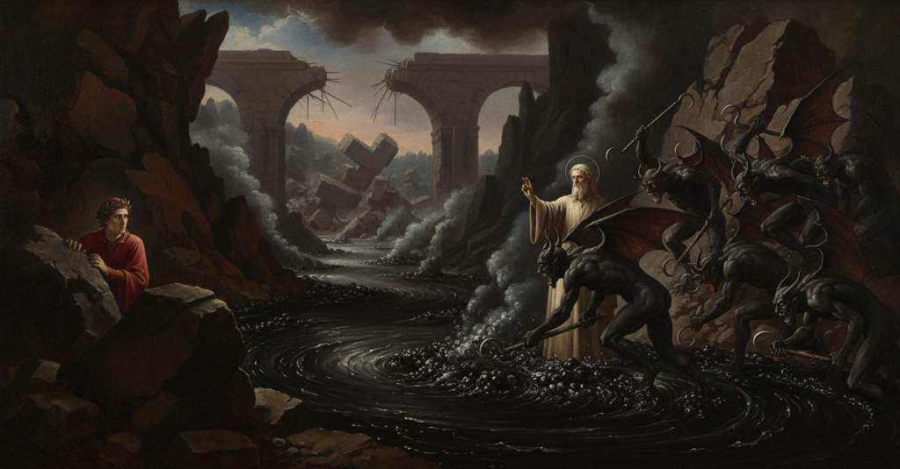

Inferno — Canto 21

1
Così di ponte in ponte, altro parlando
Thus from bridge to bridge, speaking of other things
かくして橋から橋へと、他のことを語りながら
2
che la mia comedìa cantar non cura,
that my comedy does not care to sing,
我が喜劇が謳うには及ばぬことを、
3
venimmo; e tenavamo ’l colmo, quando
we came; and we were at the summit, when
我らは進み、橋の頂上に立った、その時
4
restammo per veder l’altra fessura
we stopped to see the other fissure
我らは立ち止まり、次なる裂け目を見た
5
di Malebolge e li altri pianti vani;
of Malebolge and the other vain laments;
マーレボルジェの、そして他の虚しい嘆きを。
6
e vidila mirabilmente oscura.
and I saw it was marvelously dark.
そしてそれは驚くほどに暗かった。
7
Quale ne l’arzanà de’ Viniziani
As in the arsenal of the Venetians
ヴェネツィア人の造船所において
8
bolle l’inverno la tenace pece
the tenacious pitch boils in the winter
冬に粘り強い瀝青が煮えたぎるように
9
a rimpalmare i legni lor non sani,
to re-caulk their unsound ships,
傷んだ彼らの船体を修理するために、
10
ché navicar non ponno—in quella vece
for they cannot sail—instead of which
航海はできず――その代わりに
11
chi fa suo legno novo e chi ristoppa
one makes his new ship and another plugs up
ある者は新しい船を造り、ある者は埋め木をする
12
le coste a quel che più vïaggi fece;
the ribs of one that has made many voyages;
最も多くの航海をした船の肋材に。
13
chi ribatte da proda e chi da poppa;
one hammers at the prow and one at the stern;
ある者は船首を、ある者は船尾を打ち直し、
14
altri fa remi e altri volge sarte;
another makes oars and another twists ropes;
他の者は櫂を作り、他の者は綱を撚り、
15
chi terzeruolo e artimon rintoppa—:
one patches the jib and the mainsail—:
ある者は前帆と主帆を繕う――
16
tal, non per foco ma per divin’ arte,
so, not by fire but by divine art,
そのように、火ではなく神の術によって、
17
bollia là giuso una pegola spessa,
a thick pitch boiled there below,
下では濃い瀝青が煮え立ち、
18
che ’nviscava la ripa d’ogne parte.
which coated the bank on every side.
両岸の隅々までべとつかせていた。
19
I’ vedea lei, ma non vedëa in essa
I saw it, but I did not see in it
私はそれを見ていたが、その中には何も見えず
20
mai che le bolle che ’l bollor levava,
anything but the bubbles that the boiling raised,
ただ煮えたぎりが生み出す泡のほかには、
21
e gonfiar tutta, e riseder compressa.
and the whole of it swell, and settle down compressed.
全体が膨れ上がり、そして圧縮されて沈むのを。
22
Mentr’ io là giù fisamente mirava,
While I was staring fixedly down there,
私がそこをじっと見つめていると、
23
lo duca mio, dicendo «Guarda, guarda!»,
my guide, saying "Look out, look out!",
我が師は、「見よ、見よ！」と言って、
24
mi trasse a sé del loco dov’ io stava.
drew me to him from the place where I stood.
私がいた場所から自身の方へと引き寄せた。
25
Allor mi volsi come l’uom cui tarda
Then I turned like the man who is slow
すると私は振り向いた、見ることをためらう男のように
26
di veder quel che li convien fuggire
to see that which he must flee
逃げねばならぬものを、
27
e cui paura sùbita sgagliarda,
and whom a sudden fear unnerves,
そして突然の恐怖に気力を奪われた者が、
28
che, per veder, non indugia ’l partire:
who, for the sake of seeing, does not delay his departure:
見るために、出発を遅らせはしない――
29
e vidi dietro a noi un diavol nero
and I saw behind us a black devil
そして我らの背後に一匹の黒い悪魔が
30
correndo su per lo scoglio venire.
coming, running up over the crag.
岩の橋を駆け上がって来るのを見た。
31
Ahi quant’ elli era ne l’aspetto fero!
Ah, how fierce he was in his appearance!
ああ、その姿はいかに獰猛であったことか！
32
e quanto mi parea ne l’atto acerbo,
and how harsh he seemed to me in his actions,
そしてその仕草はいかに苛烈に見えたことか、
33
con l’ali aperte e sovra i piè leggero!
with wings open and light upon his feet!
翼を広げ、足取りは軽やかであった！
34
L’omero suo, ch’era aguto e superbo,
His shoulder, which was sharp and proud,
その肩は、鋭くそびえ立ち、
35
carcava un peccator con ambo l’anche,
was burdened with a sinner by both haunches,
一人の罪人を両の尻にかけて担ぎ、
36
e quei tenea de’ piè ghermito ’l nerbo.
and he held clutched the sinew of his feet.
そしてその足の腱を掴んでいた。
37
Del nostro ponte disse: «O Malebranche,
From our bridge he said: “O Malebranche,
我らの橋から言った、「おお、悪鬼ども（マレブランケ）よ、
38
ecco un de li anzïan di Santa Zita!
here is one of the elders of Santa Zita!
見よ、サンタ・ツィータの長老の一人が来たぞ！
39
Mettetel sotto, ch’i’ torno per anche
Put him under, for I am returning again
そいつを下に突っ込め、俺はもう一度戻る
40
a quella terra, che n’è ben fornita:
to that land, which is well supplied with them:
あの土地へ、あれで満ち満ちているからな。
41
ogn’ uom v’è barattier, fuor che Bonturo;
every man there is a barrator, except for Bonturo;
ボントゥーロを除いて、誰もが汚職役人だ。
42
del no, per li denar, vi si fa ita».
for money, a ‘no’ is made a ‘yes’ there.”
金のためなら、『否』も『然り』となるのだ」。
43
Là giù ’l buttò, e per lo scoglio duro
He threw him down there, and over the hard rock
そこへそいつを投げ落とし、硬い岩の上を
44
si volse; e mai non fu mastino sciolto
he turned; and never was a mastiff unleashed
引き返した。放たれた猟犬が
45
con tanta fretta a seguitar lo furo.
with so much haste to chase the thief.
あれほど速く盗人を追ったことはなかった。
46
Quel s’attuffò, e tornò sù convolto;
That one plunged in, and came up hunched over;
そいつは沈み、丸まって浮き上がってきた。
47
ma i demon che del ponte avean coperchio,
but the demons who had cover of the bridge
しかし橋の下に隠れていた悪魔どもは、
48
gridar: «Qui non ha loco il Santo Volto!
cried: “Here the Holy Face has no place!
叫んだ、「ここでは聖なる顔（サント・ヴォルト）は通用しないぞ！
49
qui si nuota altrimenti che nel Serchio!
Here one swims otherwise than in the Serchio!
ここでの泳ぎはセルキオ川とは違うのだ！
50
Però, se tu non vuo’ di nostri graffi,
Therefore, if you do not want our grappling hooks,
だから、俺たちの鉤爪が嫌なら、
51
non far sopra la pegola soverchio».
do not make yourself too visible above the pitch.”
瀝青の上から顔を出すな」。
52
Poi l’addentar con più di cento raffi,
Then they poked him with more than a hundred hooks,
それから百以上の鉤でそいつを突き、
53
disser: «Coverto convien che qui balli,
they said: “It is fitting you dance here covered,
言った、「ここでは隠れて踊らねばならん、
54
sì che, se puoi, nascosamente accaffi».
so that, if you can, you may pilfer in secret.”
もしできるなら、こっそり掠め取るがいい」。
55
Non altrimenti i cuoci a’ lor vassalli
Not otherwise do cooks to their scullions
料理人たちがその手伝いたちに
56
fanno attuffare in mezzo la caldaia
make them plunge into the middle of the cauldron
大鍋の真ん中に沈ませるのと変わらない、
57
la carne con li uncin, perché non galli.
the meat with their hooks, so that it does not float.
肉が浮き上がらぬよう、肉鉤で。
58
Lo buon maestro «Acciò che non si paia
The good master “So that it may not appear
善き師は、「お前がいることが
59
che tu ci sia», mi disse, «giù t’acquatta
that you are here,” said to me, “crouch down
見えぬように」と私に言った、「岩陰に
60
dopo uno scheggio, ch’alcun schermo t’aia;
behind a rock, that you may have some screen;
身をかがめよ、何かで隠れるように。
61
e per nulla offension che mi sia fatta,
and for any offense that may be done to me,
そして私がいかなる辱めを受けようとも、
62
non temer tu, ch’i’ ho le cose conte,
do not you fear, for I have these matters reckoned,
恐れるな、私は事情を知っている、
63
perch’ altra volta fui a tal baratta».
because another time I was at such a scuffle.”
以前にもこのようなもめ事に遭ったからだ」。
64
Poscia passò di là dal co del ponte;
Then he passed beyond the head of the bridge;
それから彼は橋のたもとを越えて進んだ。
65
e com’ el giunse in su la ripa sesta,
and when he arrived on the sixth bank,
そして第六の土手に着くと、
66
mestier li fu d’aver sicura fronte.
it was needful for him to have a confident brow.
毅然とした顔つきをする必要があった。
67
Con quel furore e con quella tempesta
With that fury and with that tempest
あの狂乱と嵐をもって
68
ch’escono i cani a dosso al poverello
with which dogs rush out upon the poor wretch
犬どもが貧しい者に飛びかかるように、
69
che di sùbito chiede ove s’arresta,
who suddenly begs where he has stopped,
彼が立ち止まったところで突然物乞いをする者に、
70
usciron quei di sotto al ponticello,
those from under the little bridge came out,
小さな橋の下からあれらが現れ、
71
e volser contra lui tutt’ i runcigli;
and turned all their grappling hooks against him;
彼に向かってすべての鉤を向けた。
72
ma el gridò: «Nessun di voi sia fello!
but he cried: “Let none of you be wicked!
しかし彼は叫んだ、「誰も不実な真似はするな！
73
Innanzi che l’uncin vostro mi pigli,
Before your hook takes me,
お前たちの鉤が私を捕える前に、
74
traggasi avante l’un di voi che m’oda,
let one of you come forward who may hear me,
お前たちの中から一人、私の話を聞く者が出よ、
75
e poi d’arruncigliarmi si consigli».
and then take counsel on hooking me.”
それから私を鉤にかけるか相談するがいい」。
76
Tutti gridaron: «Vada Malacoda!»;
They all shouted: “Let Malacoda go!”;
全員が叫んだ、「マラコーダを行かせろ！」と。
77
per ch’un si mosse—e li altri stetter fermi—
so one moved—and the others stood still—
そのため一人が動き――他の者たちはじっとしていた――
78
e venne a lui dicendo: «Che li approda?».
and came to him saying: “What good will it do him?”
そして彼のところへ来て言った、「それが何になる？」と。
79
«Credi tu, Malacoda, qui vedermi
“Do you believe, Malacoda, that you see me here,
「マラコーダよ、そなたは私がここに来たのを、
80
esser venuto», disse ’l mio maestro,
to have come,” said my master,
見たと思うか」と我が師は言った、
81
«sicuro già da tutti vostri schermi,
“already safe from all your obstructions,
「そなたたちのあらゆる妨害からすでに安泰で、
82
sanza voler divino e fato destro?
without divine will and a favorable fate?
神の意志と好意ある運命なしに？
83
Lascian’ andar, ché nel cielo è voluto
Let us pass, for it is willed in Heaven
我らを行かせよ、天において望まれているのだ、
84
ch’i’ mostri altrui questo cammin silvestro».
that I show another this savage path.”
私がこの険しい道を他の者に見せることを」。
85
Allor li fu l’orgoglio sì caduto,
Then his pride was so fallen
すると彼の傲慢さはすっかり萎え、
86
ch’e’ si lasciò cascar l’uncino a’ piedi,
that he let the hook drop at his feet,
彼は鉤を足元に落とし、
87
e disse a li altri: «Omai non sia feruto».
and said to the others: “Now let him not be struck.”
そして他の者たちに言った、「もはや傷つけるな」。
88
E ’l duca mio a me: «O tu che siedi
And my leader to me: “O you who sit
そして我が導き手は私に、「おお、そなた、
89
tra li scheggion del ponte quatto quatto,
among the splinters of the bridge, crouching low,
橋の岩くれの間にこっそりと隠れている者よ、
90
sicuramente omai a me ti riedi».
you may now safely return to me.”
もはや安心して我がもとへ戻ってまいれ」。
91
Per ch’io mi mossi e a lui venni ratto;
At which I moved and came to him quickly;
それで私は動き、急いで彼のところへ行った。
92
e i diavoli si fecer tutti avanti,
and the devils all pressed forward,
すると悪魔たちが皆前に進み出て、
93
sì ch’io temetti ch’ei tenesser patto;
so that I feared they would not keep their pact;
私は彼らが約束を守らぬのではないかと恐れた。
94
così vid’ ïo già temer li fanti
just so I once saw the foot soldiers fear,
かつて私はカプローナから降伏協定のもと
95
ch’uscivan patteggiati di Caprona,
who marched out under treaty from Caprona,
出てきた歩兵たちが恐れるのを見た、
96
veggendo sé tra nemici cotanti.
seeing themselves among so many enemies.
かくも多くの敵の中にいる自分たちを見て。
97
I’ m’accostai con tutta la persona
I pressed myself with my whole body
私は全身をもって身を寄せた、
98
lungo ’l mio duca, e non torceva li occhi
close to my leader, and did not turn my eyes
我が導き手のそばに、そして目をそらさなかった、
99
da la sembianza lor ch’era non buona.
from their appearance, which was not good.
善からぬ彼らの形相から。
100
Ei chinavan li raffi e «Vuo’ che ’l tocchi»,
They lowered their hooks, and “Want me to touch him,”
彼らは鉤を下げ、「こいつに触れてやろうか」と、
101
diceva l’un con l’altro, «in sul groppone?».
said one to another, “on the rump?”
互いに言い合った、「尻のあたりを？」。
102
E rispondien: «Sì, fa che gliel’ accocchi».
And they answered: “Yes, give him a good jab.”
そして答えた、「ああ、うまく引っ掛けてやれ」。
103
Ma quel demonio che tenea sermone
But that demon who was holding discourse
しかし我が導き手と
104
col duca mio, si volse tutto presto
with my leader, turned around very quickly
話をしていたその悪魔は、さっと向き直り
105
e disse: «Posa, posa, Scarmiglione!».
and said: “Stop, stop, Scarmiglione!”
そして言った、「やめろ、やめろ、スカルミリオーネ！」。
106
Poi disse a noi: «Più oltre andar per questo
Then he said to us: “To go further by this
それから我らに言った、「この岩の道を
107
iscoglio non si può, però che giace
rocky bridge is not possible, because the sixth arch
これ以上進むことはできぬ、というのも
108
tutto spezzato al fondo l’arco sesto.
lies all shattered at the bottom.
第六のアーチが底で完全に壊れているからだ。
109
E se l’andare avante pur vi piace,
And if you still wish to go forward,
そしてもしどうしても先に進みたいのであれば、
110
andatevene su per questa grotta;
go along this ridge;
この岩棚に沿って行くがよい。
111
presso è un altro scoglio che via face.
nearby is another rocky bridge that makes a way.
近くに道となる別の岩の橋がある。
112
Ier, più oltre cinqu’ ore che quest’ otta,
Yesterday, five hours later than this hour,
昨日、この時刻より五時間ほど後に、
113
mille dugento con sessanta sei
one thousand two hundred and sixty-six
千二百と六十六
114
anni compié che qui la via fu rotta.
years were complete since the way was broken here.
年が満ちた、ここの道が破壊されてから。
115
Io mando verso là di questi miei
I am sending some of mine over that way
私は我が手下の者たちをそちらへ送る、
116
a riguardar s’alcun se ne sciorina;
to see if anyone is airing himself out;
誰か風に当たっている者がいないか見張るために。
117
gite con lor, che non saranno rei».
go with them, for they will not be wicked.”
彼らと共に行くがよい、彼らは悪さをせぬだろう」。
118
«Tra’ti avante, Alichino, e Calcabrina»,
«Step forward, Alichino, and Calcabrina»,
「『進み出よ、アリキーノ、そしてカルカブリーナ』
119
cominciò elli a dire, «e tu, Cagnazzo;
he began to say, «and you, Cagnazzo;
と彼は言い始めた、『そしてお前、カニャッツォ、
120
e Barbariccia guidi la decina.
and let Barbariccia lead the ten.
そしてバルバリッチャが十人隊を率いよ。
121
Libicocco vegn’ oltre e Draghignazzo,
Let Libicocco come forward, and Draghignazzo,
リビコッコ、こちらへ、そしてドラギニャッツォ、
122
Cirïatto sannuto e Graffiacane
tusked Cirïatto and Graffiacane
牙あるチリアット、そしてグラッフィアカーネ、
123
e Farfarello e Rubicante pazzo.
and Farfarello and mad Rubicante.
そしてファルファレッロと狂えるルビカンテもだ。
124
Cercate ’ntorno le boglienti pane;
Search around the boiling pitch;
煮えたぎる瀝青の周りを探れ。
125
costor sian salvi infino a l’altro scheggio
let these two be safe as far as the other ridge
この者たちは次の岩橋まで無事でいさせよ、
126
che tutto intero va sovra le tane».
that goes all unbroken over the dens».
その橋は巣穴の上をそっくり無傷で架かっている』。」
127
«Omè, maestro, che è quel ch’i’ veggio?»,
«Alas, master, what is this that I see?»,
「『ああ、先生、私が見ているものは一体何ですか』と、
128
diss’ io, «deh, sanza scorta andianci soli,
I said, «ah, let us go alone without an escort,
私は言った、『どうか、護衛なしで我々だけで行きましょう、
129
se tu sa’ ir; ch’i’ per me non la cheggio.
if you know how to go; for I, for my part, do not ask for it.
もしあなたが行き方をご存知なら。私はそれを求めませんから。
130
Se tu se’ sì accorto come suoli,
If you are as shrewd as you usually are,
もしあなたがいつものように聡明でいらっしゃるなら、
131
non vedi tu ch’e’ digrignan li denti
do you not see how they grind their teeth
彼らが歯を剝き出しにしているのがお見えになりませんか、
132
e con le ciglia ne minaccian duoli?».
and with their brows threaten us with woes?».
そして眉で我々に苦痛を脅しているのが？』」
133
Ed elli a me: «Non vo’ che tu paventi;
And he to me: «I do not want you to fear;
すると彼は私に言った、「お前が怖がることは望まぬ。
134
lasciali digrignar pur a lor senno,
let them grind on at their own pleasure,
彼らが好きに歯を剝き出すままにしておけ、
135
ch’e’ fanno ciò per li lessi dolenti».
for they do that for the suffering boiled ones».
彼らがそうするのは、煮られて苦しむ者たちに対してなのだから」。
136
Per l’argine sinistro volta dienno;
Along the left bank they made a turn;
左の土手へと彼らは向きを変えた。
137
ma prima avea ciascun la lingua stretta
but first each had pressed his tongue fast
だがその前に、各自は舌を歯で挟み、
138
coi denti, verso lor duca, per cenno;
with his teeth, toward their leader, for a signal;
隊長に向けて、合図としていた。
139
ed elli avea del cul fatto trombetta.
and he had made a trumpet of his ass.
そして彼は、尻で喇叭を鳴らしたのだった。